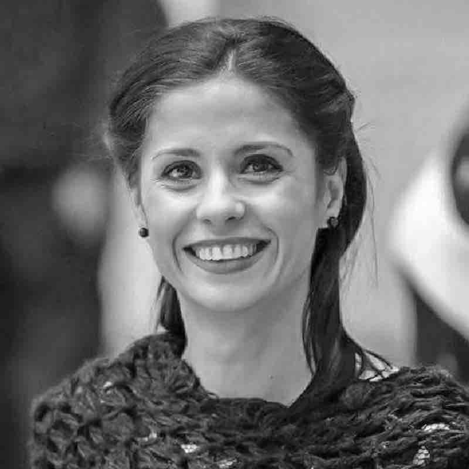
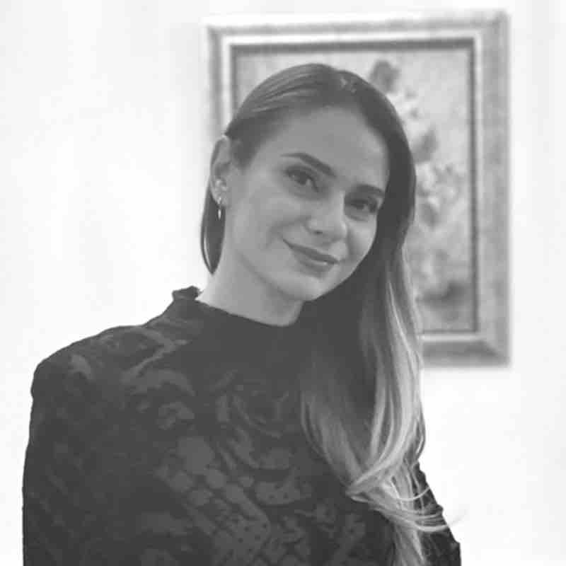
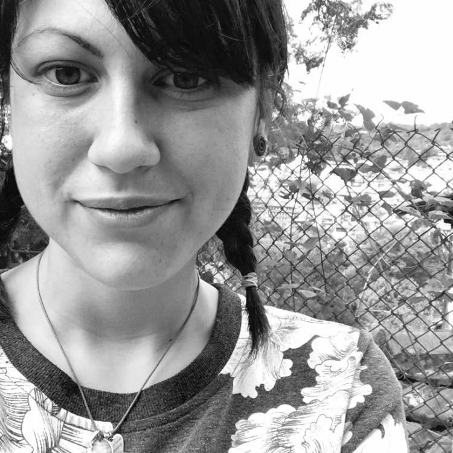

Нашият подход
Научете повече за нашата работа
Подходът
Какъв е терапевтичният подход и кои подходи използваме?
Процесът
Колко продължителен е терапевтичният процес и от какво се състои?
Сесията
Как изглежда една сесия и какво може да очаквате от нея?
В Simple Therapy използваме разнообразие от терапевтични подходи, за да отговорим на уникалните нужди на всеки клиент. Нашият подход комбинира елементи от когнитивно-поведенческа терапия и позитивна психотерапия, транзакционен анализ и използва проекционни техники, осигурявайки персонализиран и индивидуален подход за всеки клиент. Този холистичен подход ни позволява да се справим с широк спектър от нужди в областта на психичното здраве, предоставяйки комплексна и персонализирана грижа.
Когнитивно-поведенческа терапия (КПТ) се смята за структуриран и краткосрочен метод, който помага на клиентите да осъзнаят отрицателните си начини на мислене и нездравословните си поведенчески модели. КПТ е ефективен инструмент и може да се използва самостоятелно или в комбинация с други терапевтични методи. Този метод се използва широко при лечението на тревожност и депресия, нарушения на храненето, ПТСР и други. Все пак, КПТ не се използва само за работа със състояния на психичното здраве. Това е полезна техника за всеки, който иска да научи как да се справя със стresиращи ситуации, контролиране на гнева или да се подготви за предизвикателни ситуации, за да ги види по-ясно и да реагира по-ефективно на тях.
Позитивна психотерапия е метод, ориентиран към разрешаване на конфликти, създаден от Носрат Песескиан през 1977 година. Терминът "позитивен" произлиза от латинския език и означава актуалните и реалните аспекти. Този метод на психотерапия се ръководи от няколко ключови принципа.
"Принципът на Надеждата" е фундаментален и цели да помогне на пациентите да разберат значението и целта зад техните разстройства или конфликти. Това включва позитивно тълкуване, където, например, нарушенията на съня могат да бъдат разглеждани като повишена настореност или депресията като дълбок емоционален отговор на конфликти.
"Принципът на Баланса" признава универсални модели на справяне, въпреки разликите в културите. Той идентифицира четири области на живота - тяло/здраве, постижения/работа, контакти/отношения и бъдеще/цел/смисъл на живота, като влияещи на разрешаването на конфликти. Все пак, прекомерното акцентуиране на една област може да засенчи другите.
Накрая, "Принципът на Консултацията" определя петстепенен процес на терапия и самопомощ. Той започва с наблюдение и продължава с вземане на инвентар, ситуационно насърчение, вербализация и разширяване на целите. Този подход позволява на пациентите да решават проблеми и да си поставят цели, свързани с бъдещето, като разпознават своите сили и ресурси. Позитивната психотерапия е преобразуващ подход, фокусиран върху личния растеж и промяна.
Терапевтичният път се разкрива чрез няколко ключови сесии.
Начална сесия: Тази сесия има няколко цели. Преди всичко тя е посветена на събирането на основна информация и установяването на основата за споделената съвместна работа. През тази фаза се изследват нуждите, очакванията, целите и мотивацията на клиента за терапия. Освен това тя служи като възможност за запознаване на терапевта и клиента и определяне дали може да се установи ефективно и продуктивно партньорство.
Към края на началната сесия терапевтът предоставя резюме, описващо вероятен работен план. Все пак, е важно да се разбере, че терапевтичният процес е динамичен и адаптивен. Началният план, който създаваме, функционира като гъвкаво ръководство, отворено за корекции по време на продължителното терапевтично пътуване. И двете страни, както терапевтът, така и клиентът, трябва да се чувстват комфортно при обсъждане и промяна на плана, колкото е необходимо, за да се гарантира, че той остава в съответствие с възникващите нужди и цели.
Втора сесия: В тази сесия фокусът ни остава върху събирането на ценна информация. Освен това тя цели да образова клиента относно структурата на нашите терапевтични сесии. През тази фаза ще получите изчерпателно разбиране за структурата на сесията и какво да очаквате по време на нашето общуване.
Завършек на Терапията: Е от съществено значение да се предотврати терапията да стане зависимост, като се гарантира, че клиентите не стават прекалено зависими от емоционалната подкрепа и приемството на терапевта си. След като се постигнат установените цели или се отговори на нуждите до удовлетворение, терапевтичният процес е изпълнил своята цел. Поради това той следва да приключи по здравословен и внимателен начин. По мярка на приближаване към завършека на терапевтичната работа постепенно намаляваме честотата на сесиите. Обсъжданията относно завършека и всякакви останали теми, които искате да обсъдите, се инициират по време на нашите последни сесии. Завършекът на терапията е съвместен процес, който улеснява гладка трансформация, като се спазват вашите нужди и цели.
Важно е да подчертаем, че всяка терапевтична сесия е уникална, без строги насоки. Сесиите се персонализират, за да отговорят на индивидуалните изисквания и нужди на клиента. Въпреки това, ако трябваше да определим структурирана рамка, тя би напомняла следното:
Начало: Всяка сесия започва с кратко петминутно резюме на текущото емоционално състояние на клиента, позволявайки им да се интроспектират и влезнат в контакт със своите чувства.
Фокус на сесията: Темата на сесията може да съответства на началния план или да обхване текущ проблем от по-голямо значение. Ако клиентът желае да обсъди текущо събитие от значение, това обикновено се споделя в началото на сесията. Ако има повече от една тема за сесията, терапевтът и клиентът съвместно избират основната насоченост на сесията.
Основни компоненти: Същността на сесията включва динамични дискусии, персонализирани упражнения или споделяне на обратна връзка, всичко съобразено с индивидуалните нужди и амбиции на клиента.
Завършване и продължение: Сесиите могат да приключат с конкретни задачи или задачи за последване, които позволяват на клиентите активно да се ангажират с терапевтичния процес и да приложат нови познания извън нашите сесии. Въпреки че това изглежда първоначално изискващо, то в крайна сметка гарантира здравословното ви участие в терапията и ви дава сила да приложите това, което сте научили по време на нашето сътрудничество във вашия ежедневен живот. Естествено, тези задачи се обсъждат внимателно и не са задължителни, ако не се чувствате удобно да ги изпълнявате.
Статии
Лорем ипсум долор сит амет консектьор.
Запознайте се с нашия екип
Кои са членовете на екипа ни
Нашият екип включва терапевти, изследователи и практици с многогодишен опит, посветени да предоставят най-добрите услуги, за да помогнат на нашите клиенти да постигнат емоционално и умствено благополучие.

Радост Овагимян
Клиничен психолог
Психотерапевт

Розалина Петкова
Психолог и психотерапевт
Изследовател по когнитивни науки

Ралица Пенкова
Клиничен психолог и психотерапевт

Атанас Атанасов
Психолог
Изследовател по когнитивни науки

Дилян Тотев
Психолог
Логопед
Николета Колева
Консултант психолог
Психотерапевт

Полита Караилиева
Консултант психолог
Психотерапевт
За Радост
Радост Овагимян е висококвалифициран клиничен психолог и психотерапевт с богат опит, базиран в Стара Загора. Тя предоставя психологическа консултация както на деца, така и на възрастни, специализирана в широк спектър от проблеми, включително развитиеви разстройства, депресивни и тревожни разстройства, нарушения на храненето, нарушения на съня, сексуални дисфункции и различни форми на зависимост. Тя също се занимава с деструктивни импулси, нарушения в контрола на поведението, травми и други състояния, свързани със стрес.
Освен личната си практика, Радост предлага онлайн терапевтични сесии на клиенти, като прави своите познания достъпни на по-широка аудитория.
Образователно, Радост притежава магистърски степени в Областта на Личностовата психология от Университета на Велико Търново "Св. Св. Кирил и Методий" (2005) и магистърска степен по Консултативна психология и Клинична психология от Югозападния университет "Неофит Рилски" (2014).
Нейните обширни квалификации включват обучение в реномирани институции като Университета в Лисабон и Европейското училище по наркотици. Тя завършва обширно обучение в различни терапевтични подходи, включително когнитивно-поведенческа терапия, схематична терапия, динамично психотерапевтично интервю, метода на Монтесори, консултации по зависимост, невропсихология, личностова психология, психодиагностика и много други.
Образование и Квалификации:
- Сертификат за Обучение в Областта на Лечението на Зависимости; Варшава; 2017
- Сертификат: CBT Symposium 2017 "CBT за По-Рядко Диагностицирани Личностови Разстройства"; 2017
- Училище на Консултантите - Обучение по Лечението на Зависимости; Варшава; 2017
- Сертификат: Семинар по Съвременни Подходи в Профилактиката на Наркотични Вещества; 2018
- Сертификат: CBT Symposium 2018 - "Преобразуване на Образите: Метод за Обработка на Спомени за Травматични и Други Негативни Преживявания"; 2018
- Сертификат: CBT Symposium 2019 - "ОКО и Отвъд: Работа с ОКО и Разстройство на Обвиването при Сложни Случаи"; 2019
- Сертификат: Семинар по Стандартно Ниво на Групова Схематерапия; 2019
- Сертификат: Участие в Летното Училище на Европейския Съюз по Наркотици 2018; Институто Университарио де Лисабон, Португалия; 2018
- Сертификат в "Психо-Социални Вмешателства и Профилактика"; 2010
- Сертификат в "Психо-Социални Вмешателства за Пациенти с Зависимости"; 2011
- Сертификат в "Терапевтични Подходи за Пациенти с Зависимости от Вещества от типа на Амфетамини"; 2012
- Сертификат в "Консултиране на Зависими от Алкохол и Наркотици"; Полша; 2012
- Сертификат в "Обучение по Метода на Монтесори"; 2013-2014
- Сертификат в "Съвременна Профилактика на Рисково Поведение при Непълнолетни";
Опит:
От 2010г. до 2019 г. Радост Овагимян заема позицията на Директор на Центъра по Зависимости към Министерството на здравеопазването в Стара Загора. От 2019 г. тя е Директор по Човешки ресурси в МБАЛ Тракия в Стара Загора.
Радост развива своята частна практика в Център Сенс. Освен това, Радост служи като наставник за нашия екип от началото на годината.
За Розалина
Розалина завършва бакалавърска степен по психология през 2016 г. от Университета на Велико Търново, България. През 2015-2016 г. завършва стаж в Държавната Психиатрична болница в село Церова Кория. През 2019 г. тя разширява своя опит чрез стаж в Института по психология към Министерството на вътрешните работи на България.
Розалина е добре запозната с методите на Позитивната психотерапия и получава сертификация като Основен консултант по Позитивна психотерапия през 2018 г. През 2021 г. тя започва магистърска програма по Когнитивни науки в Нов български университет. Паралелно тя започва обучение по втора терапевтична парадигма - програмата за Когнитивно-поведенческа терапия, акредитирана от Международната асоциация на терапевтите.
Розалина се специализира в работата с различни психологически предизвикателства, включително тревожност и депресия, фобии, ниско самоуважение, регулация на емоциите и разстройства на личността, когато често терапията се препоръчва като допълнително поддържащо лечение наред с медицинските намеси. Тя също така има обширен опит в работата с чужденци, които помага на тях да се адаптират към нови култури и среди.
Образование и Квалификации:
- 2016 Бакалавър по психология, Университет на Велико Търново, България;
- 2018 Сертифициран Основен Консултант по Позитивна Психотерапия;
- 2022 Сертификат за завършено Въведение в Когнитивно-поведенческа терапия
- 2022 Сертификат за завършено Терапия на Когнитивно-поведенческа терапия на интермедиерно ниво
Опит:
Професионалният опит на Розалина включва:
Стаж в Държавната психиатрична болница в Церова Кория, България, от 2015 до 2016 г.
Стаж в Института по психология към Министерството на вътрешните работи на България през 2019 г.
Роля на асистент в "Аутизъм Днес" в София, България, през 2018 г.
Начало на своята частна терапевтична практика в Симпъл Терапи през 2020 г.
За Ралица
Ралица е предан професионалист с опит както в корпоративния, така и в терапевтичния сектор. Тя носи сочувствен и клиентоцентриран подход към своята работа, съсредоточавайки се върху създаването на безопасно и подкрепящо пространство за лица, търсещи насоки и помощ. Ралица се ангажира с помощ на клиентите в изследването на своите мисли, емоции и преживявания, насърчавайки личен растеж и емоционално благополучие. Нейният топъл и емпатичен характер, комбиниран с корпоративния ѝ опит, я прави ценен ресурс за онези, които се сблъскват с предизвикателствата на живота. Тя се стреми да вдъхновява клиентите си да преодолеят препятствията и постигнат положителни промени.
Образование и Квалификации:
- Бакалавър по Маркетинг и Реклама от Нов български университет, с втора специалност в Областта на Човешките Ресурси.
- Магистър по Приложна Психология от Университета в Пловдив.
- Допълнителна следдипломна квалификация в Консултационна Психология от Университета във Велико Търново.
- Магистър по Клинична Психология от Югозападен Университет в Благоевград.
- Сертификат "Ранно Откриване и Профилактика на Проблеми с Умственото Здраве" - 2019
- Сертификат "КЗП за По-Рядко Диагностицирани Разстройства на Личността" - 2017
- Сертификат "Международен Семинар: Съвременни Подходи за Предотвратяване на Рисково Поведение в Семейства с Деца" - 2017
- Сертификат "Кратки Вмешателства и Психотерапевтични Подходи на Кратък Срок" - 2017
- Сертификат "Съвременни Подходи в Профилактиката на Злоупотребата на Наркотици" - 2018
- Сертификат "Изображение и Препрограмиране: Метод за Обработка на Спомени за Травматични и Негативни Преживявания" - 2018
- Сертификат "КПЗ и Отвъд Тях: Работа с Разстройства на Личността и Разстройство на Копнежа в Сложни Случаи" - 2019
Опит:
- Работи две години като Асистент по Човешки Ресурси в Хюлет Пакърд, България.
- След това работи в отдела по човешки ресурси на мултипрофилната болница МБАЛ "Хаджи Димитър" в Сливен.
- В момента работи като консултант по психология в МБАЛ Тракия, Стара Загора.
- Съосновава Психотерапевтичния Център "Сенс" с Радост Овагимян.
- Работи като психолог в МБАЛ "Хаджи Димитър" в Сливен, специализирайки се в психологичната оценка на възрастни, диагностика на невроразвитъчни разстройства, психологични оценки за шофьорска лицензия и съдебни психологични експертизи.
За Атанас
Атанас е дипломиран психолог от Университета във Велико Търново. В момента той продължава допълнителни образователни програми в областта на психологията и психотерапията, фокусирайки се върху когнитивната наука и здравната психология чрез две магистърски програми. В практиката си той използва предимно когнитивно-поведенческата терапия, предлагайки гъвкав и индивидуален подход, съобразен със специфичните нужди на всеки клиент. Атанас предоставя онлайн консултации на няколко езика, включително български, английски и испански.
За Дилян
Дилян завършва бакалавърска степен по психология (2016 г.) и магистърска степен по приложна психология (2018 г.) на Университета "Св. св. Кирил и Методий" във Велико Търново. В момента (от 2022 г.) той е докторант по образователна и развиваща се психология на същия университет. През 2023 г. завършва магистърска степен по логопедия в Шуменския университет "Свети Константин Преславски". Дилян има 5-годишен опит като психолог, работейки предимно с деца и техните родители както в предучилищни заведения, така и в частна практика.
Образование и квалификации:
- Бакалавърска степен по психология, Университет "Св. св. Кирил и Методий" във Велико Търново (2016 г.)
- Магистърска степен по приложна психология, Университет "Св. св. Кирил и Методий" във Велико Търново (2018 г.)
- Магистърска степен по логопедия, Шуменски университет "Свети Константин Преславски" (2023 г.)
Опит:
- Психолог в муниципални детски градини, Община Исперих (2018 – 2022 г.)
- Психолог в ДГ "Слънце", Исперих (2020 – 2022 г.)
- Частна психологическа практика след 2022 г.
За Николета
Николета завършва психология в Университета "Св. св. Кирил и Методий" във Велико Търново. Тя също завършва следдипломни квалификации като Консултант по психология. В своята практика тя използва различни методи, включително метафорични карти, подходи на когнитивно-поведенческа терапия, схематична терапия и изобразително изкуство. Тя предоставя онлайн консултации на български език и работи предимно с възрастни.
Образование и квалификации
- Психолог - Психология - Университет "Св. св. Кирил и Методий" във Велико Търново
- Консултант по психология - Консултативна психология - Университет "Св. св. Кирил и Методий" във Велико Търново
- Помощник-педагог - Асоциация "Обичай себе си първо" - Велико Търново, България
- Сертифицирано обучение "Приближаване до психотерапия"
- Сертифицирано обучение "Схематична терапия като диагностичен и терапевтичен инструмент"
- Сертифицирано обучение "Основно обучение с OH карти"
- Сертифицирано обучение "Психодинамично интервю и основни терапевтични умения"
- Сертифицирано обучение "Психотерапевтични методи и практики"
- Сертифицирано обучение "Обща психотерапия"
- Курс "Личен опит" (Когнитивно-поведенчески парадигма) - 250 часа в Spectra Consult
За Полита
Полита Караилиева завършва магистърска степен по психология в Университета "Св. св. Кирил и Методий" във Велико Търново и притежава квалификация в областта на консултиране на деца и младежи. Тя разполага също със Сертификат за личен опит в психодрама и Сертификат за динамично интервю.
Полита има опит в работата с деца и младежи. Тя работи като ментор-педагог в уникалното училище за социално дефилирани деца "Димитър Екимов" в село Русаля за три години. След това работи като психолог в училището. Тя завършва също и 6-месечен стаж като помощник арт терапевт в дневен център за лица с психични разстройства.
В своята практика използва техники от когнитивно-поведенческа терапия, логотерапия на Виктор Франкъл и изобразително изкуство. Работата на Полита се съсредоточава в помощта на родители, деца и младежи на възраст от 7 до 18 години, които се сблъскват с проблеми като тревожност, търсене на смисъл (ноогенна неуроза), депресия или проблеми с самооценката.
Образование и квалификации
- Магистърска степен по психология от Университет "Св. св. Кирил и Методий" във Велико Търново
- Квалификация в консултиране на деца и младежи от Университета във Велико Търново
- Сертификат за личен опит в психодрама
- Сертификат за динамично интервю
Ако сте решени да осъществите желаната от вас промяна или имате въпроси, не се колебайте да се свържете с нас.
Свържете се с нас
Можете да ни намерите по телефон, имейл, социални медии или като се свържете с един от нашите професионални профили.